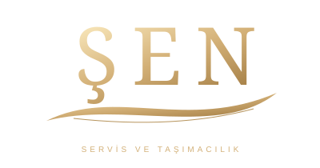

Personel
Taşımacılığı
İzmir’de fabrika ve işletmeler için personel servis organizasyonu.

GÜVENLİ • KONFORLU • ZAMANINDA
İzmir’de personel, okul servisi ve şehir içi taşımacılık hizmetleri sunuyoruz. Talebe bağlı özel etkinlik ve turizm ulaşımı da planlıyoruz.
ŞEN Servis ve Taşımacılık olarak İzmir'de personel ve okul servisi taşımacılığı alanında hizmet sunuyoruz.
Fabrikaların, işletmelerin ve kurumsal müşterilerimizin ulaşım ihtiyaçlarına yönelik çözümler geliştirirken güvenliği, konforu ve zamanında ulaşımı ön planda tutuyoruz.
Lüks ve konforlu araçlarımızla en uygun servis hizmetlerini sunuyor, müşterilerimizin talepleri doğrultusunda özel etkinlik ve turizm taşımacılığı da planlıyoruz.
Amacımız, her yolculukta güven veren ve sürdürülebilir iş birlikleri kuran bir ulaşım çözüm ortağı olmaktır.
Şirketimiz hakkında bilgi alın ↗İzmir genelinde işletmelerin günlük servis ihtiyaçlarına ve talebe bağlı özel ulaşım planlarına yönelik çözümler.
İzmir’de fabrika ve işletmeler için personel servis organizasyonu.
Günlük şehir içi ulaşım ihtiyaçlarına yönelik servis hizmeti.
Öğrencilerin günlük okul ulaşımına yönelik servis hizmeti.
Talep doğrultusunda özel etkinlik, yolcu ve turizm ulaşımı.
Şehir içi servis hizmetlerimizde Novo Lux araçlarımızla ulaşım ihtiyaçlarına yönelik çözümler sunuyoruz.
Personel ve okul servisi, şehir içi ulaşım veya talebe bağlı özel taşımacılık için teklif ve bilgi almak üzere bize ulaşın.
ŞEN SERVİS VE TAŞIMACILIK